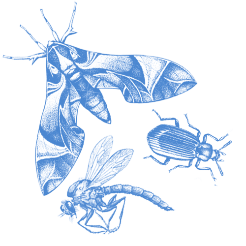

The all-blue male Indigo Bunting sings with cheerful gusto and looks like a scrap of sky with wings. Sometimes nicknamed "blue canaries," these brilliantly colored yet common and widespread birds whistle their bouncy songs through the late spring and summer all over eastern North America. Look for Indigo Buntings in weedy fields and shrubby areas near trees, singing from dawn to dusk atop the tallest perch in sight or foraging for seeds and insects in low vegetation.
Indigo Buntings eat small seeds, berries, buds, and insects. Common seed forage includes thistles, dandelions, goldenrods, and grain such as oats; berries eaten include blueberries, strawberries, blackberries, serviceberries, and elderberries. Spiders and insect prey, which form the majority of their diet during summer months, may include caterpillars, grasshoppers, aphids, cicadas and beetles such as canker worms, click beetles, and weevils. The brown-tail moth caterpillar, which is covered with noxious hairs that cause nasty rashes and respiratory problems in people, presents no obstacle to a hungry bunting. On arrival to breeding grounds in spring, Indigo Buntings may feed on twigs, buds, and leaves of trees including aspen, cottonwood, oaks, beech, elm, maple, and hickory.
Indigo Buntings breed in brushy and weedy areas. They're common on the edges of woods and fields; along roads, streams, rivers, and powerline cuts; in logged forest plots, brushy canyons, and abandoned fields where shrubby growth is returning. While migrating and in winter, Indigo Buntings forage in fields, lawns, grasslands, rice fields, as well as in shrubs, and trees.
Indigo Buntings nest in fields and on the edges of woods, roadsides, and railroad rights-of-way. The female chooses a concealed nest site in low vegetation, within a meter of the ground. She locates the nest in a crotch or fork where branches meet, amid a supporting network of vertical and diagonal twigs. Occasionally an Indigo Bunting builds her nest in crop plants like corn or soybeans.
The female Indigo Bunting builds the nest alone—a process that takes up to 8 days early in the season and as little as 2 days later in the summer. The male may watch but does not participate. The nest is an open cup woven of leaves, grasses, stems, and bark, and wrapped with spider web. The inside of the cup is lined with slender grasses, tiny roots, strips of thin bark, thistle down, and sometimes deer hair. The cup is about 1.5 inches deep inside, with an outside diameter of 3 inches and an inside diameter of two inches.